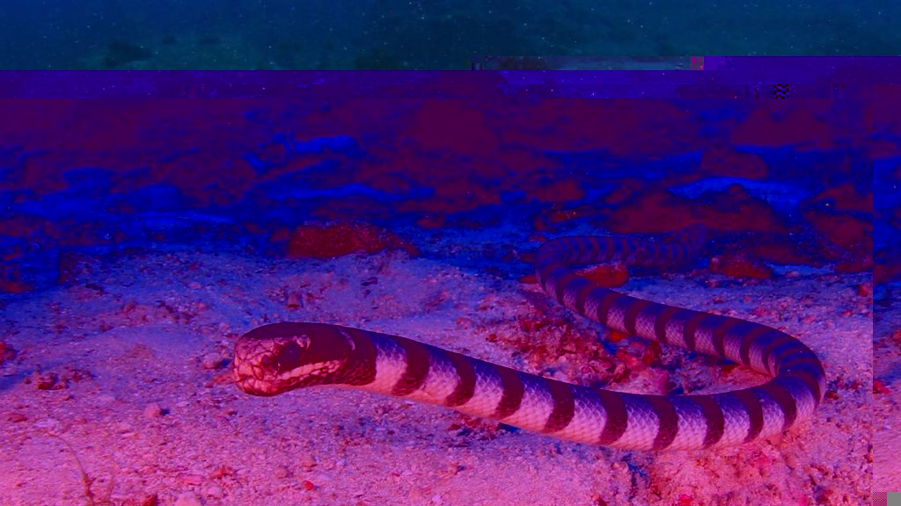

home
about the artist
This piece is one of the first images I glitched, I like it because it makes the ocean and under water background the sea snake is in look like its boiling or heating up moving from orenge to blue like a gradient in photoshop. A refrence to global warming and climate change that affects unique animals like this one.